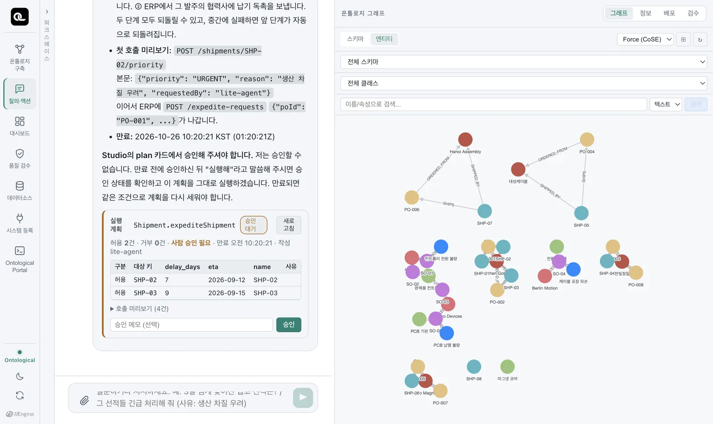
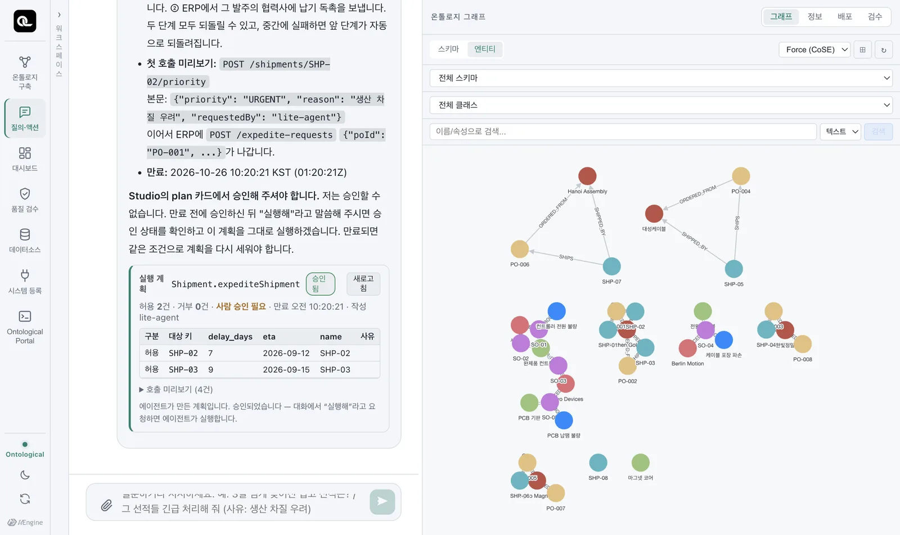
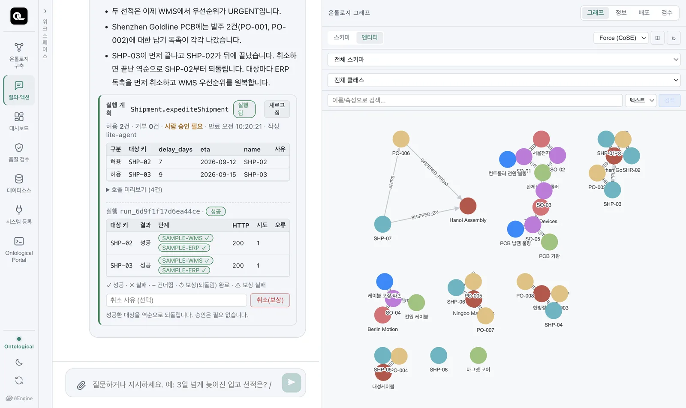
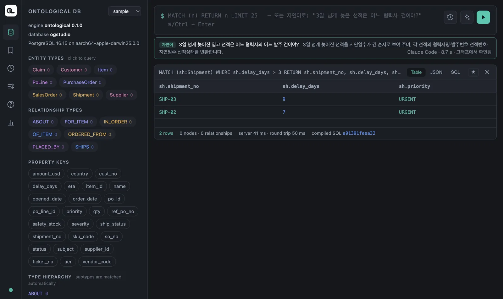
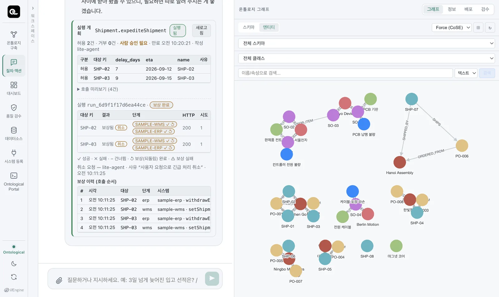

질의·액션 탭에서 지시를 내려 늦은 선적 두 건을 긴급 처리하고, 원천 DB에서 결과를 확인한 뒤, 취소로 원래 상태로 되돌립니다. 실제로 예제 업무 시스템의 데이터가 바뀝니다.
네 단계#
지시 ──▶ ① 계획 ──▶ ② 승인 ──▶ ③ 실행 ──▶ (필요하면) ④ 취소 = 역순 보상
대상·정책 판정 사람이 단계별 API 호출 성공한 단계를
아직 안 바뀜 계획 카드에서 (사가) 거꾸로 되돌림
에이전트는 계획을 세우고 실행을 요청할 수 있지만, 승인은 할 수 없습니다. 승인은 언제나 화면의 사람이 계획 카드에서 누릅니다.
① 계획 — 지시하기#
질의·액션 탭에서 지시합니다. 13장에서 늦은 선적을 물어본 대화에 이어서 해도 됩니다.
3일 넘게 늦어진 입고 선적을 긴급 처리해 줘. 사유는 생산 차질 우려.
에이전트가 액션 Shipment.expediteShipment를 고르고, 실행기에 계획을 요청합니다(실측 약 25초).

계획 카드에서 볼 것:
| 항목 | 뜻 |
|---|---|
Shipment.expediteShipment · 승인 대기 |
어떤 액션의 계획이고 지금 상태가 무엇인지 |
| 허용 2건 · 거부 0건 | 대상마다 정책을 판정한 결과. 거부된 대상에는 사유가 붙습니다(예: “입고가 끝난 선적은 제외”) |
| 사람 승인 필요 | 이 계획은 승인 없이 실행되지 않습니다 |
| 만료 | 계획은 일정 시간 안에 승인·실행해야 합니다. 지나면 같은 조건으로 다시 계획합니다 |
| 호출 미리보기 (4건) | 실제로 어떤 API를 어떤 인자로 부를지(2건 × 2단계) |
아직 아무것도 바뀌지 않았습니다. 계획은 드라이런입니다.
② 승인#
계획 카드의 「승인」을 누릅니다. 메모를 남길 수 있습니다. 카드에 “승인되었습니다 — 대화에서 ‘실행해’라고 요청하면 에이전트가 실행합니다”라고 나옵니다.

③ 실행#
실행해
에이전트는 승인된 계획을 그대로 실행합니다(다시 계획하지 않습니다). 실행기는 대상마다 단계를 차례로 부르고, 실행 직전에 정책을 한 번 더 판정합니다.

| 대상 | WMS 우선순위 | ERP 납기 독촉 | 결과 |
|---|---|---|---|
| SHP-02 | ✓ NORMAL → URGENT | ✓ PO-001 → S-CN-01, 독촉 발송 | 성공 |
| SHP-03 | ✓ NORMAL → URGENT | ✓ PO-002 → S-CN-01, 독촉 발송 | 성공 |
정말 바뀌었을까 — 원천에서 확인하기#
포털(그래프 sample)에서 원천 WMS를 그대로 읽어 봅니다.
MATCH (sh:Shipment) WHERE sh.delay_days > 3
RETURN sh.shipment_no, sh.delay_days, sh.priority

데이터소스 탭에서 wms.shipment 미리보기를 봐도 같습니다. 업무 시스템이 원천을 고쳤고, 데이터 패브릭은 그 원천을 읽기 때문입니다.
④ 취소 — 역순 보상#
방금 한 긴급 처리를 취소해 줘.
에이전트가 실행 기록을 찾아 보상을 요청합니다. 실행기는 성공한 단계를 역순으로 되돌립니다 — 나중에 한 일(ERP 독촉)을 먼저 철회하고, 먼저 한 일(WMS 우선순위)을 나중에 되돌립니다.

| # | 대상 | 단계 | 시스템 · API | 결과 |
|---|---|---|---|---|
| 1 | SHP-02 | erp | sample-erp · withdrawExpediteRequest |
보상 성공 (200) |
| 2 | SHP-02 | wms | sample-wms · setShipmentPriority |
보상 성공 (200) |
| 3 | SHP-03 | erp | sample-erp · withdrawExpediteRequest |
보상 성공 (200) |
| 4 | SHP-03 | wms | sample-wms · setShipmentPriority |
보상 성공 (200) |
포털에서 다시 확인하면 두 선적의 priority가 NORMAL로 돌아와 있습니다. WMS 우선순위의 보상은 $before.priority — 실행 직전의 값으로 되돌리기 때문입니다. 원래 HIGH였다면 HIGH로 돌아갑니다.
사가 — 중간에 실패하면#
여러 시스템을 차례로 부르다가 중간에 하나가 실패하면 어떻게 될까요? 예를 들어 SHP-03의 WMS 단계는 성공했는데 ERP 단계가 실패했다면, WMS만 URGENT인 어중간한 상태가 남습니다.
실행기는 이것을 사가(saga) 패턴으로 막습니다. 어떤 대상의 단계가 실패하면 그 대상에서 이미 성공한 단계를 역순으로 자동 보상합니다. 그 대상만 원래대로 돌아가고, 다른 대상은 성공한 채로 남으며, 결과는 “일부 성공”으로 보고됩니다. 시스템마다 상태가 엇갈리는 일이 생기지 않습니다.
| 상황 | 실행기의 처리 |
|---|---|
| 모든 단계 성공 | 성공 |
| 한 대상의 2단계 실패 | 그 대상의 1단계를 자동 보상 → 그 대상은 원상태, 결과는 “일부 성공” |
| 같은 요청이 두 번 감 | 대상마다 멱등성 키가 붙어 있어 업무 시스템이 두 번 처리하지 않음 |
| 계획 뒤 데이터가 바뀜 | 실행 직전 정책을 다시 판정해, 이제 맞지 않는 대상은 건너뜀 |
지시를 잘 하는 법#
- 대상 조건을 분명히: “3일 넘게 늦은”, “Shenzhen Goldline PCB의 미결”.
- 사유를 함께: 필수 입력이면 에이전트가 물어봅니다. 실행 기록과 업무 시스템에 남습니다.
- 계획 카드의 거부 사유를 읽으세요. 정책이 왜 막았는지가 보입니다. 정책을 바꾸고 싶다면 그것은 구축(액션 정의)의 일입니다.
실습 과제
- “Shenzhen Goldline PCB의 미결 발주를 모두 보류해 줘 (사유: PCB 납땜 불량 조사)”를 지시하고, 계획 카드에서 허용·거부된 발주와 그 사유를 확인하세요.
- 승인·실행한 뒤 데이터소스 탭에서
erp.purchase_order의 상태가ON_HOLD로 바뀌었는지 보고,erp.po_hold테이블에 무엇이 기록됐는지 보세요. - 취소하고, 상태가
OPEN으로 돌아왔는지 확인하세요.
정답 보기
- 허용: PO-001, PO-002 (모두 OPEN). Shenzhen Goldline PCB의 발주는 이 두 건뿐이라 거부는 0건입니다. (만약 “모든 협력사의 발주를 보류해 줘”라고 하면 CLOSED인 PO-003, PO-004가 “미결 발주만” 사유로 거부됩니다.)
erp.purchase_order의 PO-001, PO-002가ON_HOLD.erp.po_hold에는 발주마다 사유·보류 전 상태(prev_status = OPEN)·요청자가 한 줄씩 생깁니다.erp.po_hold는 가상 노드가 아니므로 데이터소스 탭의 테이블 상세에서 컬럼만 보입니다 — 내용을 보려면 가상 노드로 노출하세요(6장).- 보상(
releasePurchaseOrder)이 보류 전 상태로 되돌려OPEN이 됩니다.